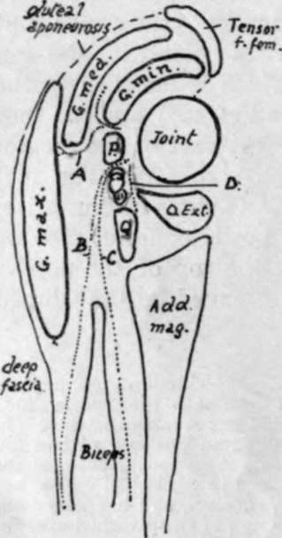
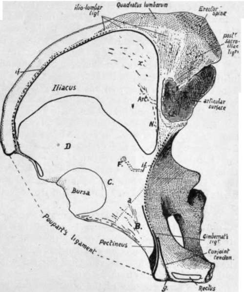

The External Ischio-Pubic Region
Description
This section is from the book "The Anatomy Of The Human Skeleton", by J. Ernest Frazer. Also available from Amazon: The anatomy of the human skeleton.
The External Ischio-Pubic Region
A few words may be said about the attachments shown in the figure. The bony origin of Obturator externus can usually be made out on the bone with little trouble : observe that it comes well on to the body of the pubis, where its marginal line is fairly well marked. Its tendon, passing under the capsule, covers the surface A, and lies therefore in front of Quadratus femoris. The adductors as a whole, though they arise largely by tendon, do not generally leave recognisable secondary markings, but their origins are as on the plate, and can be placed as follows. Adductor longus is just below the spine, occupying the space between the oblique marking for the sheath of the Rectus and the Obturator externus : it extends down to just below the level of the mid-point of the symphysis, and in its lower half is separated from the Obturator by Adductor brevis.
Fig. 108.-Schemes of gluteal planes arranged round the joint. P. Pyriformis; Q. Quadratus femoris. Between these is the Obturator internus and Gemelli. A. plane of course of superficial division of gluteal artery ; B. plane of small sciatic ; C. plane of great sciatic ; D. plane of nerve to Quadratus.
Adductor brevis comes in between the Obturator and the lower half of longus and extends down to just below the level of the lower end of the symphysis, being separated from the Obturator in its lower half or so by Adductor magnus and coming into relation, below the level of longus, with Gracilis superficially.
Adductor magnus, in its pubic origin, is up against Obturator externus, separating it in front from Adductor brevis for a little distance above the level of the lower end of the symphysis : below this it arises from the whole of the ramus left between the Obturator and the lower margin, where Gracilis arises. So the area of origin extends back on to the ischial portion of the ramus, where it soon exhibits a change in position : examine the lower edge, and a shallow depression of its prominent border will be noticed at X, and here the origin of the muscle passes from the outer aspect of the ramus on to its thick under surface. Here it extends on the tuberosity, occupying the outer of the two planes of this under surface, as far as the facets on the back of the tuberosity (see also Fig. 107).
Fig. 109.-Right os innominatum viewed from above, showing the iliac fossa, etc. The Iliacus passes forward over the anterior border, covering the surface D, while the Psoas magnus, lying along its inner margin, comes into relation with the bone over C. B marks the area covered by Pectineus, the origin of the muscle being shown in black. The back part of the iliac lossa is lined with ligamentous fibres, in the region x, from which Iliacus arises. The iliac fascia, which covers Iliacus and Psoas, is attached along the dotted line i.f.: where this is deficient in front the fascia reaches Poupart's ligament. Psoas parvus is inserted into the fascia, and a strong slip from its tendon reaches the ilio-pectineal line at f>s.p. with the fascia. Pectineus lies deep to the fascial plane, so that the iliac and pubic fascia? blend on the muscle : an expansion from the combined fascia? passes deep to the inner edge of Psoas and reaches the bone at a. The conjoint tendon is continuous with the front sheath of Rectus along the groove g on the inner side ol the pubic spine. Compare with Figs. 104 and 110. Art. and N are for iliac branch of iliolumbar artery and obturator nerve, separated from the bone by the Iliacus in this situation. F marks an occasional foramen for the iliac branch of the obturator artery, deep to Iliacus.
Gracilis extends along the margin from half-way up the symphysis to the depression X (Fig. 104). It is a linear aponeurotic origin.
The upper ramus of the pubis has the pubo-femoral band attached along its prominent front margin. Above this the bone (B) is covered by Pectineus, but this muscle only arises from a line along the back border of the upper surface and a wider area just outside the pubic spine. Gimbernat's ligament and the conjoint tendon are attached to the postero-internal margin immediately behind Pectineus (see later).
The inner edge of Psoas, lying on the area of bone C, just overlaps the outer edge of Pectineus, and the pubic portion of fascia lata that covers Pectineus sends a deep sheet under Psoas to the pubo-f emoral band and to the bone above this along the line a.
Notice that when the bone is in its proper position the plane of the ischio-pubic adductor surface looks downwards as well as outwards and forwards, so that the group of Adductor muscles is below the Obturator externus as well as in front of it.
Arterial branches of the obturator (0.) and internal circumflex (I.C.) run on the bone among the muscle origins as shown in the plate.
Looked at from above, the bone exhibits the ihac fossa most clearly, with certain other parts. Fig. 109 is a sketch of the bone seen in this way : the origin of Ihacus is indicated in outline in the fossa. Examine the back and inner part (x) of its area, above and external to the auricular surface, and the surface of the bone will be found somewhat lined; the markings are not in the direction of the muscular fibres, and are not made by them, but by a thick ligamentous layer that covers the bone as a prolongation of the sacro-iliac ligamentous system. Ihacus arises from these, and from the rest of its area on the bone, by muscle fibre.
The muscle covers the bone between its origin and the mesial aspect of the anterior inferior spine ; internal to it the Psoas lies on the bone. The brim of the pelvis in front turns inwards away from the hne of Psoas, and the triangular area thus made is covered by Pectineus : observe that this has a linear origin except where it arises by muscle fibre outside and behind the pubic spine.
Continue to:
- prev: The Acetabular RegionContinued
- Table of Contents
- next: The External Ischio-Pubic Region (Fig. 104). Part 2